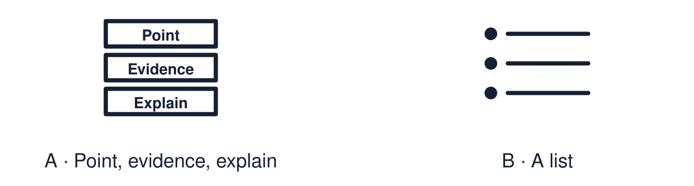

Arrival choices
Previous lesson reminder:

Start with 1 and 2. Try 3 and 4 when ready. Reading and exact scribing are available.
1 Name one value shared across two worldviews.
Support: Use the reminder strip or talk it through with an adult.
2 Which meaning fits point?
Support: Choose: A clear answer to the question OR An example or fact that supports the point.
3 In the model answer, which sentence is the evidence?
Support: Use the model evidence anchor C or read one relevant card together.
4 Is a list the same as an explanation?
Support: Give a reason when ready.
Stretch: use a precise example or explain which detail supports your answer.
Evidence cards
Read, point or listen. Keep the source label with any detail you use.
A The structure
Point: answer the question. Evidence or example: “For example…”. Explain: “This shows… because…”. Three sentences are enough.
Source: Authored classroom resource
Limit: This is a support for clear thinking, not an exam technique.
B A list, not an explanation
“Christians pray, go to church and read the Bible.” This lists. It never says why.
Source: Authored classroom example
Limit: A list can be the start of a good answer.
C A model explanation
“A belief can influence a person’s work. For example, Daniel believes everyone deserves dignity. Therefore he chose care work, because it lets him act on that belief.”
Source: Authored classroom model
Limit: A model shows the method. Other good answers exist.
D Question bank
How can a belief influence a choice? Why might someone trust a sacred text? How can a shared value bring people together?
Source: Authored classroom resource
Limit: Choose the question you can support with evidence.
Shared investigation
1. Improve each weak response using the colour-coded structure.
2. Find the evidence in the improved version.
Work with a partner or adult, or use your own table. One person suggests; the other checks the evidence. Swap after one turn. Passing is allowed.
Move or match the cards
| Cards to use |
|---|
| The Day of Peace is about peace. |
| Humanists are nice and do good things. |
Rewrite one draft and explain what you changed.
Support: Use the glossary and one chunk of evidence. Plan the claim and supporting detail before explaining.
Further challenge: Add a second piece of evidence and explain which is stronger.
Supported independent task
Complete this route only. Write or give a structured explanation using a point, evidence/example and explanation.
1. Choose one question from the bank.
2. Choose your evidence from three options.
3. Say the three sentences aloud, or have them scribed.
Support: Use the glossary and one chunk of evidence. Plan the claim and supporting detail before explaining. Complete the organiser one space at a time. Point: ___. For example, ___. This shows ___ because ___.
An adult may read or scribe your exact response. They should not choose the answer.
Standard independent task
Complete this route only. Write or give a structured explanation using a point, evidence/example and explanation.
1. Choose one explain question from Weeks 1–4.
2. Write a point and an example.
3. Explain using “because” or “therefore”.
Support: Point: ___. For example, ___. This shows ___ because ___.
Check the required evidence and revise one detail.
Stretch independent task
Complete this route only. Write or give a structured explanation using a point, evidence/example and explanation.
1. Answer one question with point, evidence and explanation.
2. Add a second example.
3. Explain which example supports your point better.
Support: Choose the evidence independently. Use the frame only if it helps.
Add a second piece of evidence and explain which is stronger.
Exit ticket
Choose a response mode. You may give your answers privately to an adult.
In the model answer, which sentence is the evidence?
Is a list the same as an explanation?
Support: Point: ___. For example, ___. This shows ___ because ___.
Further challenge: Add a second piece of evidence and explain which is stronger.